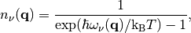
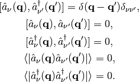
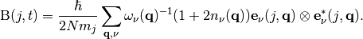

Mean square displacement¶
From Eq. (10.71) in the book “Thermodynamics of Crystal”, atomic displacement, u, is written by
![u^\alpha(jl,t) = \left(\frac{\hbar}{2Nm_j}\right)^{\frac{1}{2}}
\sum_{\mathbf{q},\nu}\left[\omega_\nu(\mathbf{q})\right]^{-\frac{1}{2}}
\left[\hat{a}_\nu(\mathbf{q})\exp(-i\omega_\nu(\mathbf{q})t)+
\hat{a}^\dagger_\nu(\mathbf{-q})\exp({i\omega_\nu(\mathbf{q})}t)\right]
\exp({i\mathbf{q}\cdot\mathbf{r}(jl)})
e^\alpha_\nu(j,\mathbf{q})](_images/math/4427b949ad666a4f21d21f24cb1d64a99ecc5a26.png)
where j and l are the labels for the j-th atomic position in the
l-th unit cell, t is the time,  is an axis (a
Cartesian axis in the default behavior of phonopy), m is the atomic
mass, N is the number of the unit cells,
is an axis (a
Cartesian axis in the default behavior of phonopy), m is the atomic
mass, N is the number of the unit cells,  is the
wave vector,
is the
wave vector,  is the index of phonon mode. e is the
polarization vector of the atom jl and the band at
.
is the index of phonon mode. e is the
polarization vector of the atom jl and the band at
.  is the atomic position and
is the phonon frequency.
is the atomic position and
is the phonon frequency.  and
and
 are the creation and annihilation operators of
phonon. The expectation value of the squared atomic displacement is
calculated as,
are the creation and annihilation operators of
phonon. The expectation value of the squared atomic displacement is
calculated as,

where n is the phonon population, which is give by,

where T is the temperature, and is the Boltzmann constant. The equation is calculated using the commutation relation of the creation and annihilation operators and the expectation values of the combination of the operations, e.g.,

Mean square displacement matrix¶
Mean square displacement matrix is defined as follows:

This is a symmetry matrix and diagonal elements are same as mean square displacement calculated along Cartesian x, y, z directions.
Projection to an arbitrary axis from the Cartesian axes¶
In phonopy, eigenvectors are calculated in the Cartesian axes that are defined in the input structure file. Mean square displacement along an arbitrary axis is obtained projecting eigenvectors in the Cartesian axes as follows:

where  is an arbitrary unit direction.
is an arbitrary unit direction.